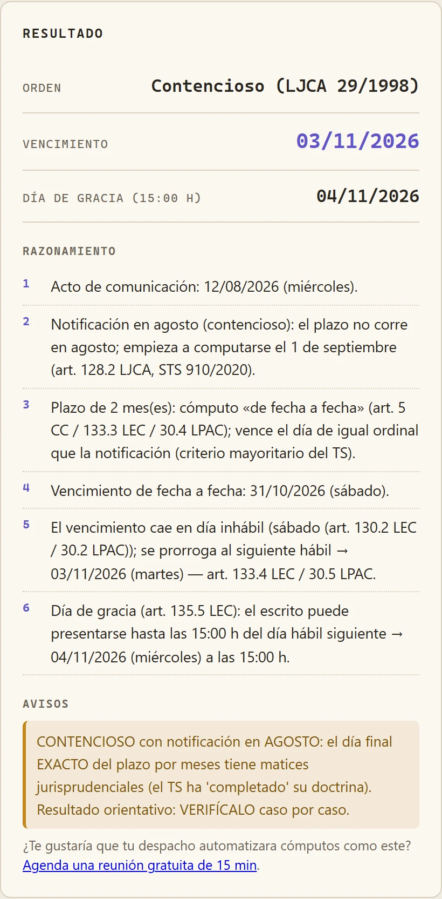

01
Demo viva
LEC · LJCA · LJS · LECrim · LPAC
Reloj de plazos procesales
- Cómputo en cinco vías: civil, contencioso, social, penal y administrativa.
- Día de gracia del art. 135.5 LEC: hasta las 15:00 del día hábil siguiente.
Ver detalle
- Agosto resuelto orden por orden, con la doctrina del TS (STS 910/2020) para el contencioso.
- Festivos reales de calendario, no fines de semana a ojo.
- Notificación a procurador y LexNET (art. 151.2 LEC) como opción del cálculo.

Captura real · recurso contencioso notificado el 12/08/2026